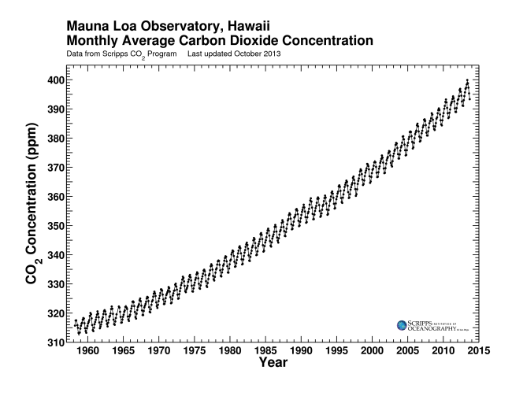
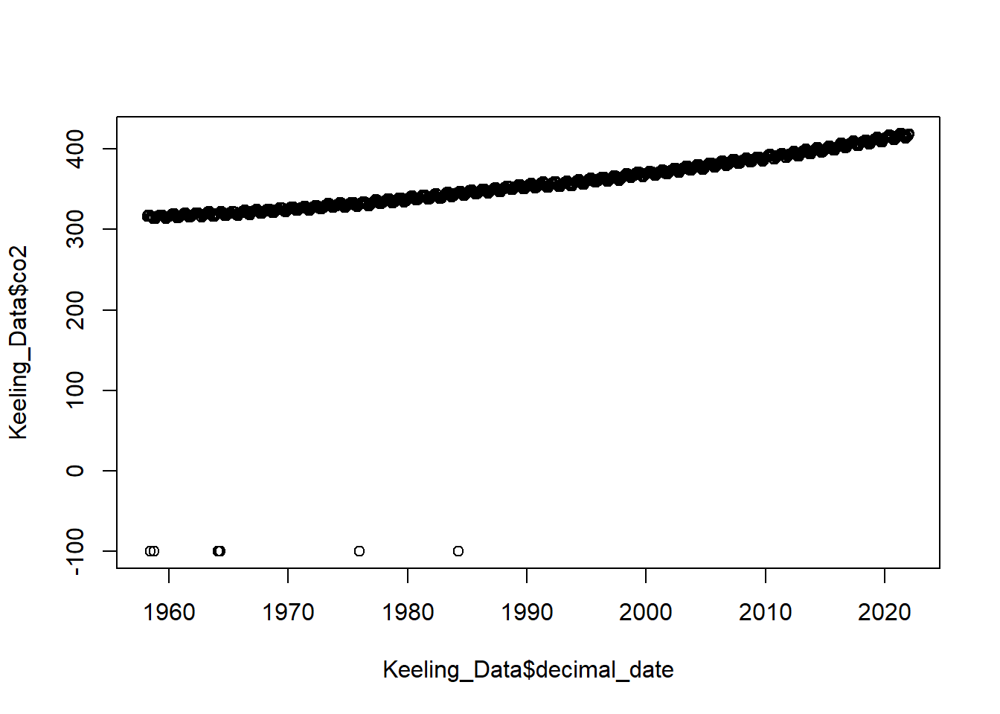
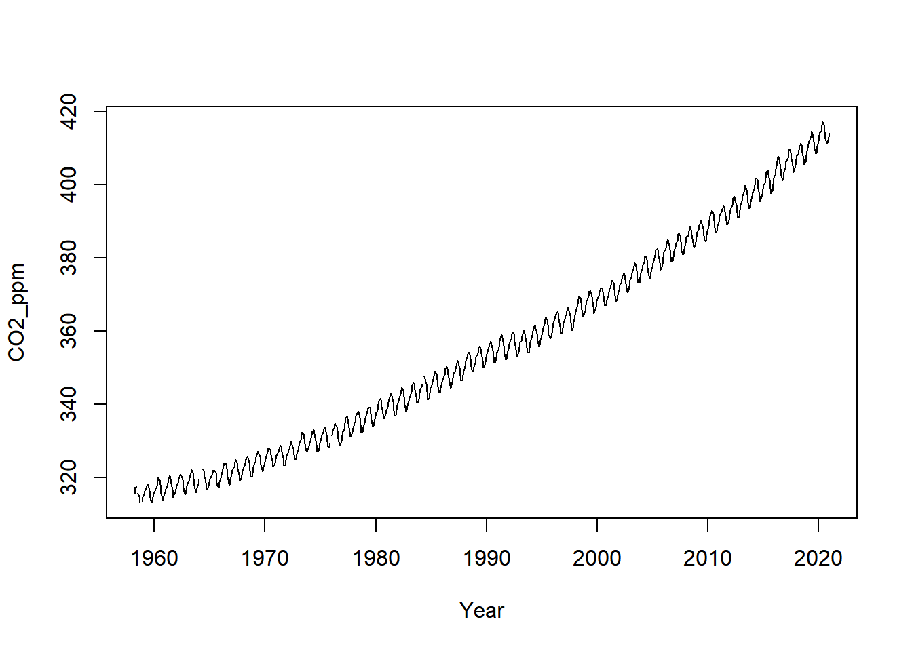

Section 02 A closer look at environmental datasets
Section Example: Keeling Curve

Charles David Keeling directed a program to measure the concentrations of CO2 in the atmosphere that continued without interruption from the late 1950s through the present. This program, operated out of Scripps Institution of Oceanography, is responsible for the Mauna Loa record, which is almost certainly the best-known icon illustrating the impact of humanity on the planet as a whole. 1
We will start with monthly CO2 data measured from Mauna Loa.
Loading a .csv file
To begin with,
Download the
co2_mm_mlo.csvfile from hereSave the file to your
working directory.Take a look at the file, where the column
co2means monthly average CO2 in the unit ofppm(part per million, 10-6),qualitycolumn is the quality flag of the observation,0means the data point does not meet the quality control so that should be discarded,1means the data point is usable.
Now let’s load this file via the following:
The file is loaded into the dataset Keeling_Data. Here we use the option header = T so that the first line of co2_mm_mlo.csv is also loaded as names of the variables. You can try to turn this off by setting header = F, and check what happens.
Check the names of columns:
## [1] "year" "month" "decimal_date" "co2" "quality"If column names are not specified, e.g., using headers = FALSE in a read.csv() function, R assigns default names V1, V2, …, Vn.
Check the head (first 6 lines) of the dataset using head() function
## year month decimal_date co2 quality
## 1 1958 March 1958.208 315.71 1
## 2 1958 April 1958.292 317.45 1
## 3 1958 May 1958.375 317.50 1
## 4 1958 June 1958.458 -99.99 0
## 5 1958 July 1958.542 315.86 1
## 6 1958 August 1958.625 314.93 1Or the end of (last 6 lines) with tail():
## year month decimal_date co2 quality
## 749 2020 July 2020.542 414.38 1
## 750 2020 August 2020.625 412.55 1
## 751 2020 September 2020.708 411.29 1
## 752 2020 October 2020.792 411.28 1
## 753 2020 November 2020.875 412.89 1
## 754 2020 December 2020.958 414.02 1The read.table() function is used for reading in tabular data stored in a text file where the columns of data are separated by punctuation characters such as .csv files (csv = comma-separated values). Tabular files are the most common file type you would encounter in your future study, as it’s easy to use and share.
Tabs and commas are the most common punctuation characters used to separate or delimit data points in .csv files. For convenience R provides 2 other versions of read.table(). These are: read.csv() for files where the data are separated with commas and read.delim() for files where the data are separated with tabs. Of these three functions, read.csv() is the most commonly used. If needed it is possible to override the default delimiting punctuation marks for both read.csv() and read.delim().
We can begin exploring our data set right away, pulling out columns by specifying them using the $ operator:
## [1] 315.71 317.45 317.50 -99.99 315.86 314.93 313.20 -99.99 313.33 314.67 315.62 316.38 316.71 317.72 318.29 318.15 316.54 314.80 313.84 313.26 314.80 315.58 316.43
## [24] 316.97 317.58 319.02 320.03 319.59 318.18 315.91 314.16 313.83 315.00 316.19 316.93 317.70 318.54 319.48 320.58 319.77 318.57 316.79 314.80 315.38 316.10 317.01
## [47] 317.94 318.56 319.68 320.63 321.01 320.55 319.58 317.40 316.26 315.42 316.69 317.69 318.74 319.08 319.86 321.39 322.25 321.47 319.74 317.77 316.21 315.99 317.12
## [70] 318.31 319.57 -99.99 -99.99 -99.99 322.25 321.89 320.44 318.70 316.70 316.79 317.79 318.71 319.44 320.44 320.89 322.13 322.16 321.87 321.39 318.81 317.81 317.30
## [93] 318.87 319.42 320.62 321.59 322.39 323.87 324.01 323.75 322.39 320.37 318.64 318.10 319.79 321.08 322.07 322.50 323.04 324.42 325.00 324.09 322.55 320.92 319.31
## [116] 319.31 320.72 321.96 322.57 323.15 323.89 325.02 325.57 325.36 324.14 322.03 320.41 320.25 321.31 322.84 324.00 324.42 325.64 326.66 327.34 326.76 325.88 323.67
## [139] 322.38 321.78 322.85 324.11 325.03 325.99 326.87 328.13 328.07 327.66 326.35 324.69 323.10 323.16 323.98 325.13 326.17 326.68 327.18 327.78 328.92 328.57 327.34
## [162] 325.46 323.36 323.57 324.80 326.01 326.77 327.63 327.75 329.72 330.07 329.09 328.05 326.32 324.93 325.06 326.50 327.55 328.54 329.56 330.30 331.50 332.48 332.07
## [185] 330.87 329.31 327.51 327.18 328.16 328.64 329.35 330.71 331.48 332.65 333.19 332.16 331.07 329.12 327.32 327.28 328.30 329.58 330.73 331.46 331.90 333.17 333.94
## [208] 333.45 331.97 329.95 328.50 328.34 329.37 -99.99 331.59 332.75 333.52 334.64 334.77 334.00 333.06 330.68 328.95 328.75 330.15 331.62 332.66 333.13 334.95 336.13
## [231] 336.93 336.17 334.88 332.56 331.29 331.27 332.41 333.60 334.95 335.25 336.66 337.69 338.03 338.01 336.41 334.41 332.37 332.41 333.75 334.90 336.14 336.69 338.27
## [254] 338.95 339.21 339.26 337.54 335.75 333.98 334.19 335.31 336.81 337.90 338.34 340.01 340.93 341.48 341.33 339.40 337.70 336.19 336.15 337.27 338.32 339.29 340.55
## [277] 341.61 342.53 343.03 342.54 340.78 338.44 336.95 337.08 338.58 339.88 340.96 341.73 342.81 343.97 344.63 343.79 342.32 340.09 338.28 338.29 339.60 340.90 341.68
## [300] 342.90 343.33 345.25 346.03 345.63 344.19 342.27 340.35 340.38 341.59 343.05 344.10 344.79 345.52 -99.99 347.63 346.98 345.53 343.55 341.40 341.67 343.10 344.70
## [323] 345.21 346.16 347.74 348.34 349.06 348.38 346.71 345.02 343.27 343.13 344.49 345.88 346.56 347.28 348.01 349.77 350.38 349.93 348.16 346.08 345.22 344.51 345.93
## [346] 347.22 348.52 348.73 349.73 351.31 352.09 351.53 350.11 348.08 346.52 346.59 347.96 349.16 350.39 351.64 352.40 353.69 354.21 353.72 352.69 350.40 348.92 349.13
## [369] 350.20 351.41 352.91 353.27 353.96 355.64 355.86 355.37 353.99 351.81 350.05 350.25 351.49 352.85 353.80 355.04 355.73 356.32 357.32 356.34 354.84 353.01 351.31
## [392] 351.62 353.07 354.33 354.84 355.73 357.23 358.66 359.13 358.13 356.19 353.85 352.25 352.35 353.81 355.12 356.25 357.11 357.86 359.09 359.59 359.33 357.01 354.94
## [415] 352.95 353.32 354.32 355.57 357.00 357.31 358.47 359.27 360.19 359.52 357.33 355.64 354.03 354.12 355.41 356.91 358.24 358.92 359.99 361.23 361.65 360.81 359.38
## [438] 357.46 355.73 356.08 357.53 358.98 359.92 360.86 361.83 363.30 363.69 363.19 361.64 359.12 358.17 357.99 359.45 360.68 362.07 363.24 364.17 364.57 365.13 364.92
## [461] 363.55 361.38 359.54 359.58 360.89 362.24 363.09 364.03 364.51 366.35 366.64 365.59 364.31 362.25 360.29 360.82 362.49 364.38 365.27 365.98 367.24 368.66 369.42
## [484] 368.99 367.82 365.95 364.02 364.40 365.52 367.13 368.18 369.07 369.68 370.99 370.96 370.30 369.45 366.90 364.81 365.37 366.72 368.10 369.29 369.55 370.60 371.82
## [507] 371.58 371.70 369.86 368.13 367.00 367.03 368.37 369.67 370.59 371.51 372.43 373.37 373.85 373.22 371.50 369.61 368.18 368.45 369.76 371.24 372.53 373.20 374.12
## [530] 375.02 375.76 375.52 374.01 371.85 370.75 370.55 372.25 373.79 374.88 375.64 376.45 377.73 378.60 378.28 376.70 374.38 373.17 373.15 374.66 375.99 377.00 377.87
## [553] 378.88 380.35 380.62 379.69 377.47 376.01 374.25 374.46 376.16 377.51 378.46 379.73 380.77 382.29 382.45 382.21 380.74 378.74 376.70 377.00 378.35 380.11 381.38
## [576] 382.20 382.67 384.61 385.03 384.05 382.46 380.41 378.85 379.13 380.15 381.82 382.89 383.90 384.58 386.50 386.56 386.10 384.50 381.99 380.96 381.12 382.45 383.94
## [599] 385.52 385.82 386.03 387.21 388.54 387.76 386.37 384.09 383.18 382.99 384.19 385.56 386.94 387.48 388.82 389.55 390.14 389.48 388.03 386.11 384.74 384.43 386.02
## [622] 387.42 388.71 390.20 391.17 392.46 393.00 392.15 390.20 388.35 386.85 387.24 388.67 389.79 391.33 391.86 392.60 393.25 394.19 393.74 392.51 390.13 389.08 389.00
## [645] 390.28 391.86 393.12 393.86 394.40 396.18 396.74 395.71 394.36 392.39 391.11 391.05 392.98 394.34 395.55 396.80 397.43 398.41 399.78 398.60 397.32 395.20 393.45
## [668] 393.70 395.16 396.84 397.85 398.01 399.77 401.38 401.78 401.25 399.10 397.03 395.38 396.03 397.28 398.91 399.98 400.28 401.54 403.28 403.96 402.80 401.31 398.93
## [691] 397.63 398.29 400.16 401.85 402.56 404.12 404.87 407.45 407.72 406.83 404.41 402.27 401.05 401.59 403.55 404.45 406.17 406.46 407.22 409.04 409.69 408.88 407.12
## [714] 405.13 403.37 403.63 405.12 406.81 407.96 408.32 409.41 410.24 411.24 410.79 408.71 406.99 405.51 406.00 408.02 409.07 410.83 411.75 411.97 413.33 414.64 413.93
## [737] 411.74 409.95 408.54 408.52 410.25 411.76 413.39 414.11 414.51 416.21 417.07 416.38 414.38 412.55 411.29 411.28 412.89 414.02Let’s do some simple statistical checks with Keeling_Data$co2:
## [1] -99.99## [1] 417.07## [1] -99.99 417.07## [1] 351.7977## [1] 352.93## Min. 1st Qu. Median Mean 3rd Qu. Max.
## -99.99 328.99 352.93 351.80 379.07 417.07You will find there are some -99.99 values, which are missing values. We will get back to this later.
You can use [] to extract elements of a vector by specifying their corresponding index.
Important: Index in R starts from 1, not 0. For example:
## [1] 315.71 317.45 317.50 -99.99 315.86 314.93 313.20 -99.99 313.33 314.67## [1] 1974 1974 1974 1975 1975 1975 1975 1975 1975 1975 1975## numeric(0)We can mimic the Keeling Curve using plot() function

It’s ugly as there are a few data points with a value of -99.99 (quality=0). In fact, we should never use data points with a value of -99.99 (quality=0). One good way to do so is to set those values to NA (stands for Not Available) or Missing Values.
Important: NA is NOT the same as zero.
Year <- Keeling_Data$decimal_date
CO2_ppm <- Keeling_Data$co2
CO2_ppm[which(CO2_ppm == -99.99)] <- NA
plot(Year, CO2_ppm, type="l")
Here we use which() function to return the indexes of elements equal to -99.99. Use type="l" to plot a line, type="p" for points, and type="o" for points + line.
Important: Always use the na.rm=T option to handle vectors containing NA values.
## [1] NA## [1] 356.0314Missing Values
Different kinds of missing values
Despite the best laid plans, environmental data often contain missing data. This generally is caused by the following reasons.
Data points are indeed missing. For example, the instrument may be out of service, or some data records are lost.
Observed values are below the instrument detection limit (DL) or limit of detection (LOD). This is often seen for experimental data sets.
Observations are labeled as bad observations. This is usually seen in Remote Sensing data sets.
Handling missing values
As you can see, missing data can arise for all sorts of reasons, the problem is how to deal with it? There are lots of options for dealing with missing data, ranging from simple to complex.
Perhaps the easiest solution is to ignore or delete observations with any missing data (like what just did t). This is a luxury we often cannot afford since we may have a small sample size to begin with.
Another option is to replace the missing values with values based on expert prior knowledge. For example, people usually replace values below DL with
0, DL, or half DL. This of course is risky business and should not be done unless under very special circumstances.A final solution is to estimate the missing values using methods of imputation. The simplest of these, and therefore the most commonly used, is to replace the missing value with the mean or median of the variable. The purpose behind this imputation method is to replace the missing value with a value that will no exert any influence on the analysis. There are much more complex methods of imputation, including for example using a statistical model to predict the missing values based on the other variables in the data set. This procedure comes at the cost of using the same data to predict the missing values as we intend to use in our final statistical model. One solution of course is to use a separate set of variables for the imputation than we intend to use in the final model.
Regardless of the method employed, we have to be suspicious of any data set in which a large number of missing values have been replaced. 2
Data Types in R
Let’s try:
## [1] 315710 317450 317500 -99990 315860 314930 313200 -99990 313330 314670By doing so, we convert CO2 in a unit of ppb (part per billion, 10-9). Then how about:
The above line won’t work as Keeling_Data$month and Keeling_Data$co2 has different data types.
In R, there are 5 main types: double, integer, complex, logical, and character. We can ask what type of data something is using the typeof() function:
## [1] "double"## [1] "character"## [1] "integer"## [1] "logical"By default, R uses float numbers. Use a L suffix to force the number to be an integer:
## [1] "double"## [1] "integer"We don’t use complex very often; it can be defined as a + bi, where a and b are numbers:
## [1] "complex"No matter how complicated our analyses become, all data in R is interpreted as one of these basic data types.
For more about data types and structure, read this note
Environmental data have unique features
Temporal (time series)
As you can see from the monthly CO2 data, the time series is clearly defined. A time series is a sequence of numerical data points in successive order. Environmental data are usually sampled/stored in various time scales. Can you think about a few examples?
Spatial
Almost all environmental data we have today can be classified as spatial data. Spatial data tells us what is happening where. The data contains geospatial references, such as point coordinates or larger areas, but it actually includes many additional attributes. In this respect, spatial data provides the glue and the context of environmental information, essential for understanding and assessing what is happening. 3

Multivariate
As you may imagine, it makes sense to measure more than one variable in one experiment. For example, The Atmospheric Tomography Mission (ATom) is a flight campaign that studies the impact of human-produced air pollution on greenhouse gases and on chemically reactive gases in the atmosphere.
So why do we want to do so? What new information we might gain using such multivariate data sets?
Uncertain
Uncertainty refers to a lack of data or an incomplete understanding. Every measurement comes with a certiany uncertainty, which can be quantified by some efforts.
In-class exercises
Exercise #1
Using Keeling_Data, try the following ways to call variables or elements:
Keeling_Data[2]
Keeling_Data$month
Keeling_Data["month"]
Keeling_Data[2, 2]
Keeling_Data[, 2]
Keeling_Data[2, ]- Can you explain what is returned by each one and why?
Exercise #2
Use Keeling_Data again, compute the annual mean of CO2 since 1959, plot your results.
{kind=link}